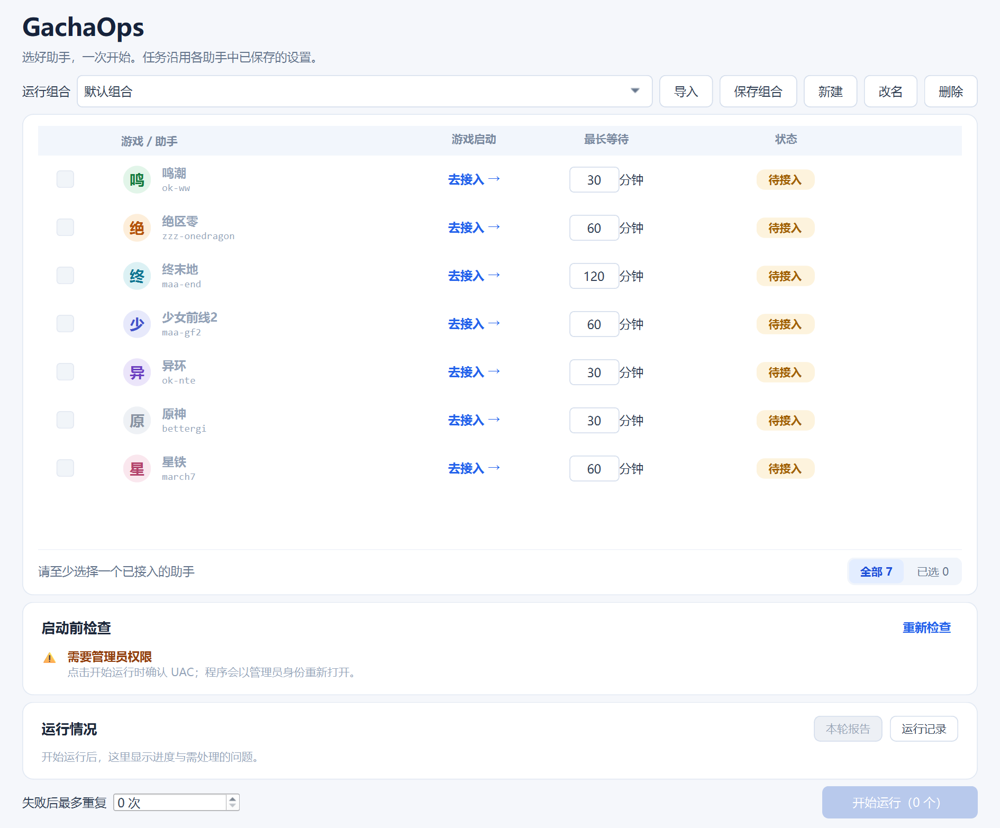

一次触发，串行编排家中 Windows 游戏机上的既有助手——任务仍由各助手 GUI 定义。
GachaOps 是独立开发的本地助手编排工具，供自动化技术学习、交流及个人重复任务管理，与游戏运营方及各助手团队没有官方隶属或背书关系。各游戏、助手名称与商标归各自权利人。
本项目采用 GNU AGPLv3（AGPL-3.0-only）；现提供 v0.1.0 预发布版。上述声明不改变许可证授予的权利，不排除法律不允许排除的责任。请先阅读 完整使用与第三方声明 · 七助手许可与声明核查。
runs/），GUI 内置预检卡、整轮分段进度条、逐条问题摘要与日志入口。| 游戏 | 执行器 / Adapter | 当前状态 |
|---|---|---|
| 鸣潮 | OK-WW ok-ww | 离线核验 · 新版实机另验 |
| 绝区零 | ZZZ-OneDragon zzz-onedragon | 离线核验 · 历史实机分列 |
| 异环 | OK-NTE ok-nte | 离线核验 · 版本实机另验 |
| 终末地 | MaaEnd maa-end | 离线核验 · 首启默认未选 |
| 星铁 | 三月七助手 march7 | 离线核验 · 首启默认未选 |
| 少前2 | MaaGF2Exilium maa-gf2 | 已核验 MFA 构建 · MXU 暂不支持 |
| 原神 | BetterGI bettergi | 离线核验 · 原神实机待验 |
Windows 二进制包包含微软提供的五个 Visual C++ 运行库 DLL。它们具有独立许可。请在使用这些 DLL 或再分发含这些 DLL 的包前，阅读《微软 CRT 组件条款》及随包微软原文。本条款仅涉及所列微软文件，不改变 GachaOps 的 AGPLv3 权利。源码仓库不交付这些 DLL；以下告知适用于包含这些 DLL 的二进制包。 在取得可阅读的完整条款后，继续使用上述微软 DLL，表示接受仅适用于这些 DLL 的组件条款；再分发含这些 DLL 的包，还须履行其中分发者的承接要求。如果不同意，请勿使用或再分发这些 DLL。你仍可依 AGPLv3 获取、修改和分发 GachaOps 自有源码。 微软 CRT 组件条款与离线原文。
v0.1.0 预发布及校验文件 · Windows x64 ZIP。下载前请阅读上方微软 CRT 告知和完整条款。七适配器当前公开证据均为离线核验；旧六游戏验收不覆盖新版或原神。详见 兼容矩阵。

候选包完整解压后打开 GachaOps.exe（包括 _internal）。首启七项未登记、未勾选；登记与检查不会启动游戏。先在原助手保存任务 → 登记安装 → 只读检查 → 用户开始。开始运行可请求管理员权限，取消不会执行。见 快速开始。
py -3 -m gachaops check-assistants --config config/assistants.example.json py -3 -m gachaops run-assistants --config config/local.assistants.json py -3 -m gachaops doctor # 只读桌面/会话/提权体检
核心仅标准库；失败场景预期返回 1，参数或执行锁冲突返回 2。运行日志与 JSON 汇总在 runs/。